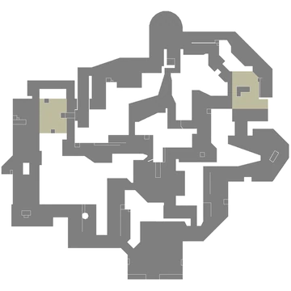

Abyss est la première carte de VALORANT à ne pas avoir de frontières
extérieures et une chute mortelle au milieu, ce qui permet aux jou
eurs de tomber de la carte dans ces zones. Certaines parties de la
carte ne sont accessibles qu'en sautant par-dessus ces chutes ; l
es positions Danger et Secret sont des corniches étroites situées
sur les frontières extérieures de la carte, utilisées comme racc
ourcis de saut. Au milieu, les joueurs ne peuvent accéder à Catw
alk directement depuis Top ou Library qu'en sautant par-dessus l
a chute mortelle de Mid vers un ascendeur.
Les deux entrées de Vent sont bloquées par des portes qui absorbent
les dégâts et les tirs tant qu'elles sont intactes. Les portes ont
120 HP avec des indicateurs colorés pour montrer la quantité de v
ie restante (commence en bleu, puis devient jaune et ensuite roug
e à mesure qu'elles subissent plus de dégâts). Une fois détruites
, le passage restera dégagé pour le reste de la manche.
Pearl
